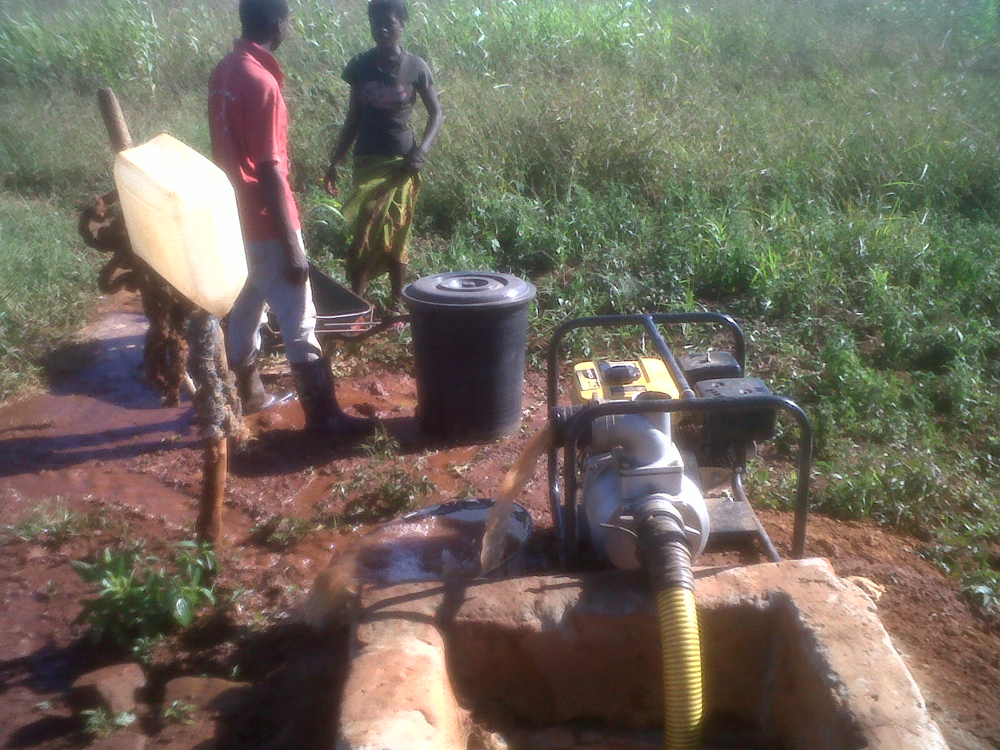

The Olive Grove Project
The Olive Grove ProjectWhy a Well — and Why It Comes Second
The olive tree is famous for surviving drought, and that fame is deserved — but surviving is not the same as producing. Young trees need regular water through their first summers to establish, and a grove that irrigates through dry spells bears earlier and heavier than one that prays. Multiply that by a cattle herd's daily thirst, and the arithmetic of the whole farm points at one hole in the ground.


The water math that sizes everything
Start with the thirstiest thing on the farm — a dairy cow. University extension data and industry monitoring agree on the ranges:
| Water user | Daily need | In heat stress |
|---|---|---|
| Lactating dairy cow | 60–120 liters/day | +20–50% — 150 liters or more |
| Dry (non-milking) cow | 50–70 liters/day | higher again |
| Young olive tree, establishing | tens of liters/week in dry season (drip) | young trees are the vulnerable ones |
Sources: University of Nebraska–Lincoln dairy extension (18–40 gallons/day for lactating Holsteins); smaXtec dairy monitoring (60–120 L/day; up to ~200 L on hot days for high producers); a 2026 systematic review in the dairy-science literature (+~10 L/day under heat stress, ~+1.5 L per THI unit).
Read that table twice and the project order explains itself: a herd of even ten lactating cows needs roughly a tonne of water every single day before a drop reaches the trees. Rule of thumb from the same literature: 4–5 liters of water for every liter of milk. No honest cattle plan can exist on paper before the water source exists in the ground — which is exactly why the cattle project is Phase 3, not Phase 1.
What a farm well actually costs — the honest version
Here's what we can say with sources, and what we refuse to invent:
- United States benchmarks: a complete agricultural/irrigation well runs about $85–$105 per foot installed, with full residential-scale irrigation wells typically landing at $9,000–$15,000 including pump and casing.
- African borehole programs: functional farm boreholes documented from roughly $2,000 upward depending on depth, geology and equipment — a UN-affiliated review records completed boreholes ranging from a few thousand dollars into six figures for extreme depths.
- What we won't do: quote you a confident Tunisian price before a hydrogeological survey of the 16 hectares says how deep the water is. Depth is the whole cost story, and geology doesn't negotiate.
The working budget envelope we plan around is $5,000–$15,000 for a complete small-farm well — drilling, casing, pump and power — and the day we hold local driller quotes, they go on this page with the survey numbers. That's the same standard as everything else here: verified, or clearly labeled as pending.
The plan, concretely
- Hydrogeological survey first. Local geologists confirm depth, yield and water quality before any money moves — the cheapest insurance in the whole project.
- Drill, case, test-pump. A borehole sized for the phased plan: grove irrigation now, herd capacity later.
- Pump with running costs we can prove. The pump choice balances upfront cost against what it costs to run daily — published with the quotes when we have them.
- Documentation, like everything else. Survey, quotes, drilling photos and receipts join the public log on the transparency page.
Frequently asked questions
How much does a farm water well cost?
Depth and geology decide. Verified benchmarks: ~$9,000–$15,000 for a complete small irrigation well in the US; from ~$2,000 in African borehole programs. Our Tunisian figure gets published the day we hold local quotes after a survey — not before.
Why does the well come before the cattle?
Water is the binding constraint: a lactating cow drinks 60–120 L/day (150+ in heat), so even a small herd needs a tonne of water daily before irrigation. The well makes the herd honest.
How much water does a dairy cow drink per day?
60–120 liters normally, +20–50% in heat. A 2026 meta-analysis found heat-stressed lactating Holsteins drink ~10 extra liters daily, rising ~1.5 L per temperature-humidity-index unit.
Can I donate specifically to the well?
One wallet, phases in order (grove → well → cattle). To earmark your donation for the well, email anistouati74@gmail.com after donating — it will be recorded in the public spending log.
Phase 1 is live right now: $10 plants a tree, the counter runs on-chain, and the well opens the moment the grove is funded. The full roadmap is on the projects page →